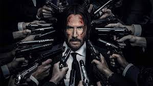
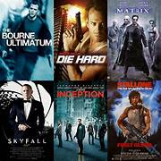

Action Genre
Action Movie Genres
The action film is a film genre which predominantly features chase sequences, fights, shootouts, explosions, and stunt work. The specifics of what constitutes an action film has been in scholarly debate since the 1980s. While some scholars such as David Bordwell suggested they were films that favor spectacle to storytelling, others such as Goeff King stated they allow the scenes of spectacle to be attuned to story telling. Action films are often hybrid with other genres, mixing into various forms ranging to comedies, science fiction films, and horror films.

The term "action film" or "action adventure film" has been used as early as the 1910s, the contemporary definition usually refers to a film that came with the arrival of New Hollywood and the rise of antiheros appearing in American films of the late 1960s and 1970s drawing from war films, crime films and Westerns. These genres were followed by what is referred to as the "classical period" in the 1980s. This was followed by the post-classical era where American action films were influenced by Hong Kong action cinema and the growing using of computer generated imagery in film. Following the September 11 attacks, a return to the early forms of the genre appeared in the wake of Kill Bill and The Expendables films.
Scott Higgins wrote in 2008 in Cinema Journal that action films are both one of the most popular and popularly derided of contemporary cinema genres, stating that "in mainstream discourse, the genre is regularly lambasted for favoring spectacle over finely tuned narrative."[1] Bordwell echoed this in his book, The Way Hollywood Tells It, writing that the reception to the genre as being "the emblem of what Hollywood does worst."
Origins and Evolution
The roots of the action genre trace back through centuries of storytelling, echoing the heroic feats of mythological figures and legendary warriors. Ancient epics like "The Iliad" and "The Odyssey" depicted epic battles and perilous journeys, laying the foundation for the modern action narrative. As civilizations evolved, so did the portrayal of action, with tales of knights, samurais, and swashbuckling adventurers captivating audiences across the globe.
In the 20th century, the action genre found its stride in the realms of literature and cinema. Pioneering authors like Edgar Rice Burroughs and Robert E. Howard brought to life iconic characters such as Tarzan and Conan the Barbarian, whose daring escapades thrilled readers worldwide. With the advent of cinema, action found a new medium through which to dazzle and enthrall audiences, with classics like "Die Hard," "Indiana Jones," and "James Bond" setting the stage for decades of explosive entertainment.
Elements of the Action Genre
At the core of the action genre lies a potent combination of adrenaline-pumping action sequences, larger-than-life characters, and high-stakes conflict. Whether it's a lone hero battling against overwhelming odds or a team of skilled operatives embarking on a dangerous mission, action stories are defined by their relentless pace and relentless pursuit of excitement.
1. Unforgettable Characters: From stoic mercenaries to charismatic rebels, the action genre is populated by a diverse array of memorable characters. Whether they're driven by vengeance, justice, or redemption, these protagonists capture the imagination with their courage, wit, and indomitable spirit.
2. Jaw-Dropping Action Sequences: From breathtaking stunts to explosive set pieces, action films are renowned for their spectacular action sequences. Whether it's a high-speed chase through the streets of a bustling city or a gravity-defying fight atop a speeding train, these moments of cinematic spectacle leave audiences on the edge of their seats.
3. High-Stakes Conflict: At the heart of every action story lies a conflict of epic proportions. Whether it's a battle against a ruthless dictator, a race against time to prevent a global catastrophe, or a showdown between rival factions vying for control, the stakes are always sky-high, keeping audiences invested in the outcome until the very end.
4. Adrenaline-Fueled Thrills: From the opening scene to the final showdown, action stories deliver a relentless barrage of thrills and excitement. Whether it's a tense game of cat and mouse between hunter and prey or a desperate struggle for survival in the face of insurmountable odds, the adrenaline never stops flowing in the world of action.
Impact and Influence

The impact of the action genre extends far beyond the realm of entertainment, shaping popular culture and inspiring generations of creators. From the rise of action figures and video games to the proliferation of action-packed theme park attractions, the influence of action can be felt in every corner of the globe.
Moreover, the action genre has served as a platform for exploring complex themes and issues, from the nature of heroism and sacrifice to the consequences of unchecked power and greed. Through the lens of larger-than-life adventures and epic struggles, action stories offer insights into the human condition, reminding us of the power of courage, resilience, and solidarity in the face of adversity.
Embrace the Adventure
In a world filled with uncertainty and turmoil, the action genre offers a thrilling escape into realms of boundless possibility and unbridled excitement. Whether you're a seasoned fan or a newcomer to the genre, there's never been a better time to dive into the heart-pounding world of action and experience the thrill of adventure like never before. So buckle up, hold on tight, and prepare to unleash your adrenaline as you embark on an unforgettable journey into the electrifying world of action!
List of movie titles that exemplify the thrilling world of the action genre:
These movies showcase the diversity and excitement of the action genre, offering audiences an exhilarating escape into worlds of danger, adventure, and heroism.

Die Hard - classic action film featuring Bruce Willis as John McClane, a New York City cop who must single-handedly thwart a terrorist plot in a Los Angeles skyscraper.
Indiana Jones series - Follow the adventures of the iconic archaeologist, Indiana Jones, as he embarks on daring quests to uncover ancient treasures and thwart evil forces.
Mad Max: Fury Road - Set in a post-apocalyptic wasteland, this adrenaline-fueled film follows Max Rockatansky as he teams up with Furiosa to escape a tyrannical warlord and his army.
James Bond series - Join the legendary MI6 agent, James Bond, on a series of globe-trotting missions filled with espionage, intrigue, and high-octane action.
The Dark Knight Trilogy - Christopher Nolan's epic trilogy follows the journey of Batman as he battles iconic villains like the Joker, Bane, and Ra's al Ghul to protect Gotham City from chaos and destruction.
The Avengers series - Marvel's blockbuster franchise brings together Earth's mightiest heroes as they join forces to battle against formidable foes and protect the universe from imminent threats.
Mission: Impossible series - Follow Ethan Hunt and his team of IMF agents as they embark on daring missions to thwart international threats and uncover hidden conspiracies.
Terminator 2: Judgment Day - In this sci-fi action masterpiece, a cyborg from the future is sent back in time to protect humanity's last hope against a relentless killing machine.
The Matrix trilogy - Enter the mind-bending world of the Matrix, where Neo, a computer hacker, discovers his true destiny as the chosen one destined to save humanity from enslavement by sentient machines.
The Fast and the Furious series - Buckle up for high-speed thrills and adrenaline-pumping action as a group of street racers-turned-international spies embark on a series of daring heists and high-stakes missions.